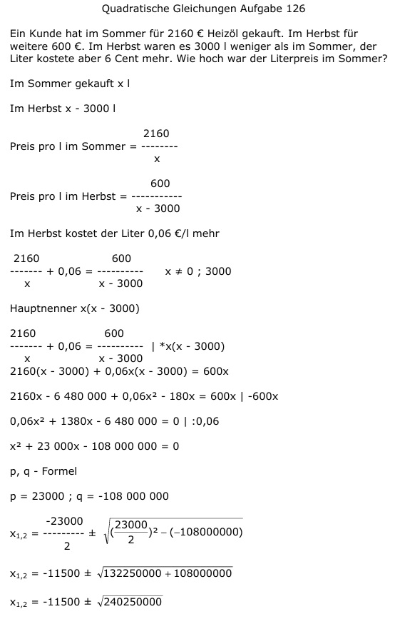

Aufgabe 126 Ein Kunde hat im Sommer für 2160 € Heizöl gekauft. Im Herbst für weitere 600 €. Im Herbst waren es 3000 l weniger als im Sommer, der Liter kostete aber 6 Cent mehr. Wie hoch war der Literpreis im Sommer? Im Sommer gekauft x l Im Herbst x - 3000 l 2160 Preis pro l im Sommer = ------ x 600 Preis pro l im Herbst = ---------- x - 3000 Im Herbst kostet der Liter 0,06 €/l mehr 2160 600 ------ + 0,06 = ---------- x ≠ 0 ; 3000 x x - 3000 Hauptnenner x(x - 3000) 2160 600 ------- + 0,06 = --------- |*x(x - 3000) x x - 3000 2160(x - 3000) + 0,06x(x - 3000) = 600x 2160x - 6 480 000 + 0,06x2 - 180x = 600x |-600x 0,06x2 + 1380x - 6 480 000 = 0 |:0,06 x2 + 23 000x - 108 000 000 = 0 p, q - Formel p = 23000 ; q = -108 000 000  x1,2 = -11500 ± 15500 x1 = -11500 + 15500 = 4000 Liter im Sommer x2 = -11500 - 15000 = -26500 keine Lösung, es gibt keine negativen Liter zu tanken Preis im Sommer: 2160 € -------- = 0,54 €/l 4000 l